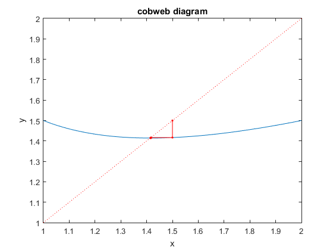
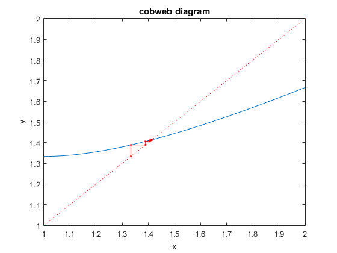
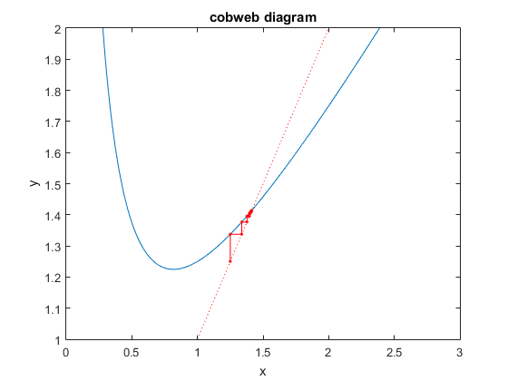
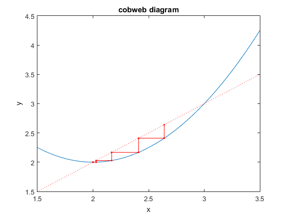
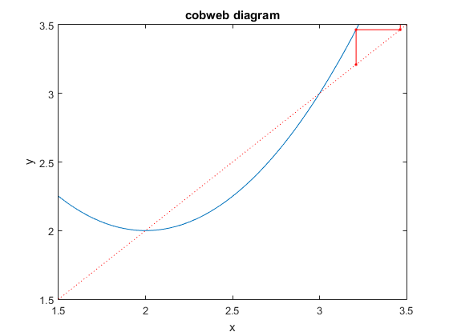
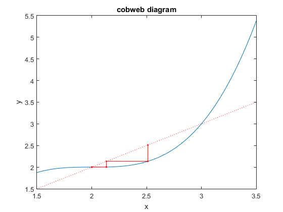
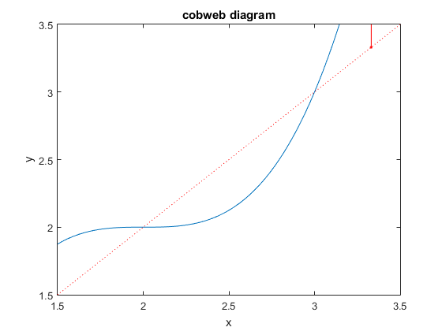

Lab 3 Solution
Lab Instructor: Valeria Barra
Contents
Called Functions
DUE Thuesday 02-09-2016
close all % it closes all open figures tol = 10^(-6); N = 50;
Problem 1.1: Problem 17 in the Homework
(a)
f1 = @(x) ((1/2).*x + 1./x); x0=1; xx=linspace(1,2,1000); % an array of values for plotting purposes disp(['Execution of problem 17(a):']) [xc,i]=fixedpoint(xx,f1, x0, N, tol); disp(['The iteration took ',num2str(i),' steps , and the fixed point found is ', num2str(xc)]); axis([xx(1) xx(end) 1 2])
Execution of problem 17(a): We have recahed the desired tolerance The iteration took 6 steps , and the fixed point found is 1.4142
(b)
f2 = @(x) ((2/3).*x + 2./(3.*x)); disp(['Execution of problem 17(b):']) [xc,i]=fixedpoint(xx,f2, x0, N, tol); disp(['The iteration took ',num2str(i),' steps , and the fixed point found is ', num2str(xc)]); axis([xx(1) xx(end) 1 2])
Execution of problem 17(b): We have recahed the desired tolerance The iteration took 13 steps , and the fixed point found is 1.4142
(c)
f3 = @(x) ((3/4).*x + 1./(2.*x)); x0=1; xx=linspace(0,3,1000); % an array of values for plotting purposes disp(['Execution of problem 17(c):']) [xc,i]=fixedpoint(xx,f3, x0, N, tol); disp(['The iteration took ',num2str(i),' steps , and the fixed point found is ', num2str(xc)]); axis([xx(1) xx(end) 1 2])
Execution of problem 17(c): We have recahed the desired tolerance The iteration took 20 steps , and the fixed point found is 1.4142
Conclusions: Clearly the first execution performs the best because the derivative of the function at the fixed point is much smaller than the other cases (close to zero)
Problem 1.2
g1 = @(x)(2+(x - 2).^2); x0_1 = 2.8; % to plot we define a domain xx=linspace(1.5,3.5,1000); % an array of values for plotting purposes disp(['Execution of problem 1.2(a):']) [xc,i]=fixedpoint(xx,g1, x0_1, N, tol); disp(['The iteration took ',num2str(i),' steps , and the fixed point found is ', num2str(xc)]); x0_2 = 3.1; disp(['Execution of problem 1.2(b):']) [xc_2,i]=fixedpoint(xx,g1, x0_2, N, tol); disp(['The iteration took ',num2str(i),' steps , and the fixed point found is ', num2str(xc_2)]); axis([xx(1) xx(end) 1.5 3.5])
Execution of problem 1.2(a): We have recahed the desired tolerance The iteration took 8 steps , and the fixed point found is 2 Execution of problem 1.2(b): The iteration took 50 steps , and the fixed point found is Inf 
Problem 1.3
g2 = @(x)(2+(x - 2).^3) ; x0_3 = 2.8; disp(['Execution of problem 1.3(a):']) [xc_3, i]=fixedpoint(xx,g2, x0_3, N, tol); disp(['The iteration took ',num2str(i),' steps , and the fixed point found is ', num2str(xc_3)]); x0_4 = 3.1; disp(['Execution of problem 1.3(b):']) [xc_4, i]=fixedpoint(xx,g2, x0_4, N, tol); disp(['The iteration took ',num2str(i),' steps , and the fixed point found is ', num2str(xc_4)]); axis([xx(1) xx(end) 1.5 3.5])
Execution of problem 1.3(a): We have recahed the desired tolerance The iteration took 6 steps , and the fixed point found is 2 Execution of problem 1.3(b): The iteration took 50 steps , and the fixed point found is Inf 
Conclusions: For both Problems 1.2 and 1.3 the first initial guess leads to convergence, while the second one to divergence.
Problem 2
Implement your own Newton's method to solve Problems 19 and 21 in your Homework, with N = 50. Compare your results and the performance of your code with the one obtained through the bisection method in the Lab 2 Problems 1 and 3, respectively.
syms x; f = x.^3 - 9; N = 50; x0 = 1; tol = 1e-6; disp(['Execution of problem 19 in the homework']) [X,err]=MyNewton(x,f,x0,tol,N); f2=( ( 50000 + 10000./x ).* exp(20.*x) -10000./x - 1000000); x0 = 0.01; disp(['Execution of problem 21 in the homework']) [X,err]=MyNewton(x,f,x0,tol,N);
Execution of problem 19 in the homework We have converged to the root, r = 2.0801 in 7 steps. Execution of problem 21 in the homework We have converged to the root, r = 2.0801 in 29 steps.
Conclusions: In the case of Problem 19 in the homework, Newton's method performs better than bisection. In fact, its convergence order is quadratic, while it was only linear for bisection method. In the case of Problem 21 in the homework instead, Newton's method performs worse (even though we start pretty close to the solution) because the derivative near the root is close to zero.